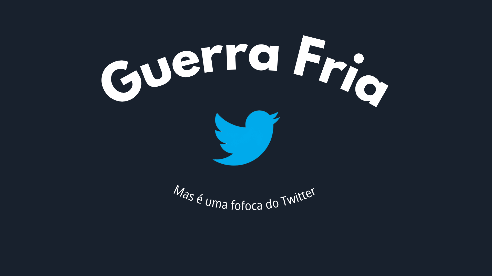

Meus projetos

Template Twitter
Este template foi feito por mim para apresentar um trabalho de história sobre a Guerra Fria, porém, para trazer mais dinâmica para a apresentação, resolvi fazer o slide totalmente do zero com o tema do twitter. Feito no Canva.

Slide "Ciências Humana"
Este projeto foi feito para praticar minhas habilidades no Figma, com o tema de cursos uiversitários na área de ciências humanas

Explorando o Universo: Uma Aventura Interativa em Astronomia com Scratch
EEste projeto Scratch cria uma experiência interativa educativa sobre astronomia, permitindo aos usuários explorar informações sobre constelações, eclipses, e a forma da Terra através de cenários dinâmicos e diálogos informativos.